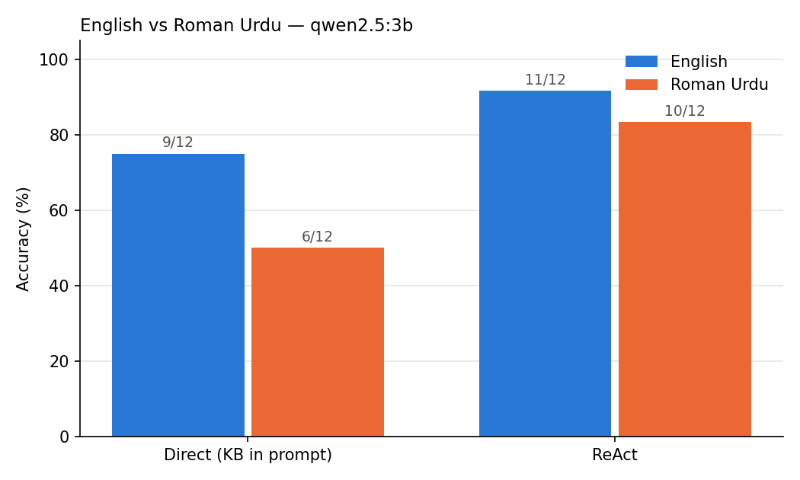

Research note · Agentic AI
Can a small local AI agent understand Roman Urdu?
By Muzammal Hussain · 18 October 2026 · 6 min read
Millions of people in Pakistan type Urdu in Latin letters: "Ayesha ke kitne sessions baqi hain?" This is Roman Urdu, and it is how many patients, receptionists and clinicians actually message each other. Yet most AI agents are designed and tested in English. I wanted to see what happens when you ask a small, fully local AI agent the same clinic questions in both languages.
The idea I tested: ReAct
ReAct (Yao et al., 2022, ICLR 2023) is one of the most cited ideas behind today's AI agents. Instead of answering in one go, the model works in a loop:
- Thought: "I need this patient's record first."
- Action: look the record up with a tool.
- Observation: read what the tool returned, then think again.
It works much like a doctor: think, order a test, read the report, decide the next step. The paper showed this reduces made-up facts compared with pure "think step by step" prompting. However, all of its benchmarks were in English, and its prompted results came from very large models (PaLM-540B and GPT-3).
So my question was simple: does a small 3-billion-parameter model, running locally on a laptop, keep its ReAct accuracy when the questions are in Roman Urdu instead of English?
The experiment
- Model: qwen2.5:3b, running locally through Ollama on a MacBook M4 (16 GB). No data left the machine.
- Data: a small fictional physiotherapy clinic (6 patients, 3 therapists). Fictional data means the model cannot answer from memory; it has to use the tools. No real patient data was used.
- Questions: 12 questions, from one step ("How many sessions are left?") to three steps ("What is the average pain score of Dr. Omar's patients?"). Each was asked in English and in Roman Urdu.
- Tools: patient lookup, therapist lookup and a calculator.
- Baseline: the same model with the whole database pasted into the prompt, answering in one shot without tools.
Results
| Method | English | Roman Urdu |
|---|---|---|
| ReAct (agent with tools) | 11/12 (92%) | 10/12 (83%) |
| Direct answer (database in prompt) | 9/12 (75%) | 6/12 (50%) |

Three things stood out:
- The agent beat the direct answer in both languages. Most direct-answer mistakes were arithmetic, such as giving 20 instead of 27 for an age difference. The agent hands arithmetic to a calculator.
- Roman Urdu hurt the direct answer far more (75% to 50%) than the agent (92% to 83%).
- Accuracy has a cost: the agent took about 3.5 seconds per question, against about 0.16 seconds for the direct answer.
What went wrong, and why it matters
In one English question ("How many years of experience does Usman Tariq's therapist have?"), the agent put the patient's name into the therapist lookup tool. It got "not found" and, instead of trying another route, answered "No information available". The same question in Roman Urdu was answered correctly.
In a clinic, that failure is the safer kind: "I don't know" is far better than a confident wrong number, because wrong medical data can harm a patient. But a good agent should also recover from its own mistake, and this one did not.
Another observation: Roman Urdu questions were mostly answered in English, even though the model was told to reply in the question's language. My hypothesis is that the model's training data is mostly English, so it drifts into English while reasoning. The English example in the prompt may also play a part; I have not tested that yet.
Limitations
This is a small pilot, not a final result. There were only 12 questions per language, so a difference of one question could be chance. I tested one model with one setting, the Roman Urdu was written by one person (real users spell it in many ways), and the database was tiny.
Why this matters for clinical AI
I am building MeetPhysio, an AI clinical documentation assistant with a local-model mode. Running the model on the clinician's own machine keeps patient data private. This test suggests a small local agent can be useful, but it also shows where it needs guarding: choosing the right tool, recovering from errors and replying in the patient's language. Speed matters too. A 3.5-second pause feels long in a live conversation, but it may be acceptable when drafting notes after the consultation.
Next steps: more questions with spelling variations, Urdu-script versions, two or three more local models, and a Roman Urdu prompt example.
Reference: Yao, S., Zhao, J., Yu, D., Du, N., Shafran, I., Narasimhan, K. and Cao, Y. (2022). ReAct: Synergizing Reasoning and Acting in Language Models. ICLR 2023. arXiv:2210.03629